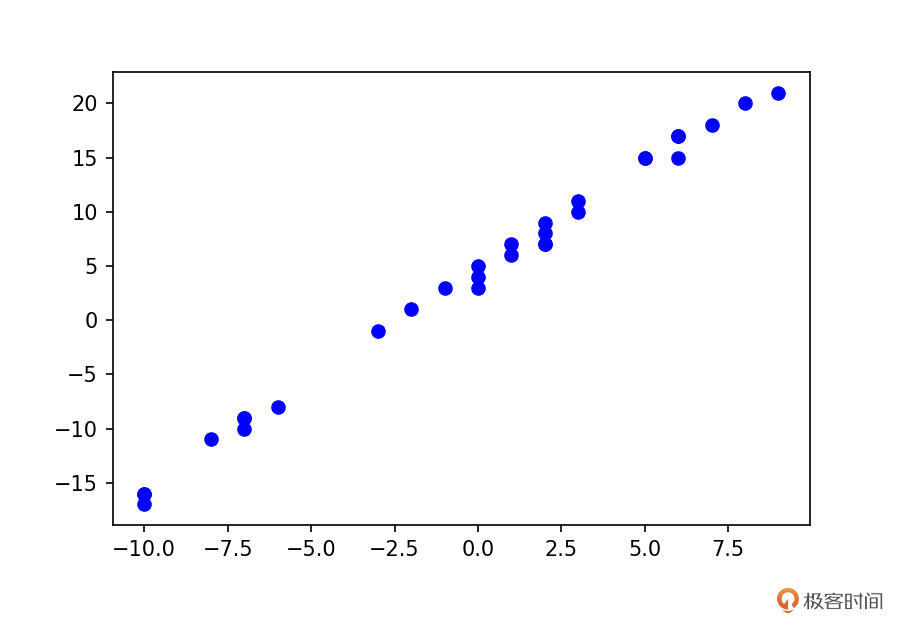
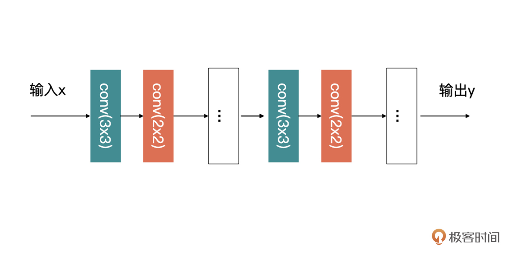
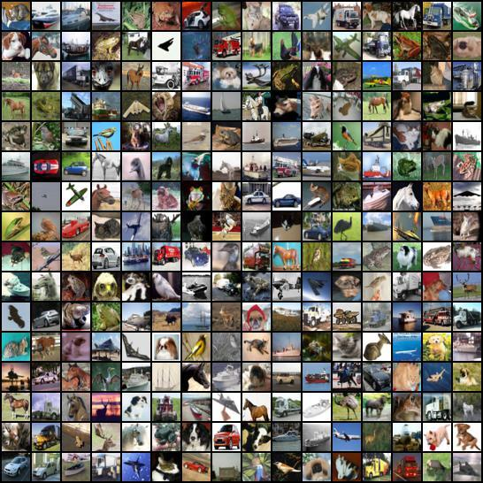

- 00 开篇词 如何高效入门PyTorch？.md.html
- 01 PyTorch：网红中的顶流明星.md.html
- 02 NumPy（上）：核心数据结构详解.md.html
- 03 NumPy（下）：深度学习中的常用操作.md.html
- 04 Tensor：PyTorch中最基础的计算单元.md.html
- 05 Tensor变形记：快速掌握Tensor切分、变形等方法.md.html
- 06 Torchvision（上）：数据读取，训练开始的第一步.md.html
- 07 Torchvision（中）：数据增强，让数据更加多样性.md.html
- 08 Torchvision（下）：其他有趣的功能.md.html
- 09 卷积（上）：如何用卷积为计算机“开天眼”？.md.html
- 10 卷积（下）：如何用卷积为计算机“开天眼”？.md.html
- 11 损失函数：如何帮助模型学会“自省”？.md.html
- 12 计算梯度：网络的前向与反向传播.md.html
- 13 优化方法：更新模型参数的方法.md.html
- 14 构建网络：一站式实现模型搭建与训练.md.html
- 15 可视化工具：如何实现训练的可视化监控？.md.html
- 16 分布式训练：如何加速你的模型训练？.md.html
- 17 图像分类（上）：图像分类原理与图像分类模型.md.html
- 18 图像分类（下）：如何构建一个图像分类模型_.md.html
- 19 图像分割（上）：详解图像分割原理与图像分割模型.md.html
- 20 图像分割（下）：如何构建一个图像分割模型？.md.html
- 21 NLP基础（上）：详解自然语言处理原理与常用算法.md.html
- 22 NLP基础（下）：详解语言模型与注意力机制.md.html
- 23 情感分析：如何使用LSTM进行情感分析？.md.html
- 24 文本分类：如何使用BERT构建文本分类模型？.md.html
- 25 摘要：如何快速实现自动文摘生成？.md.html
- 加餐 机器学习其实就那么几件事.md.html
- 用户故事 Tango：师傅领进门，修行在个人.md.html
- 答疑篇 思考题答案集锦.md.html
- 结束语 人生充满选择，选择与努力同样重要.md.html
- 捐赠
14 构建网络：一站式实现模型搭建与训练
你好，我是方远。
前面我们花了不少时间，既学习了数据部分的知识，还研究了模型的优化方法、损失函数以及卷积计算。你可能感觉这些知识还有些零零散散，但其实我们不知不觉中，已经拿下了模型训练的必学内容。
今天这节课，也是一个中期小练习，是我们检验自己学习效果的好时机。我会带你使用PyTorch构建和训练一个自己的模型。
具体我是这么安排的，首先讲解搭建网络必备的基础模块——nn.Module模块，也就是如何自己构建一个网络，并且训练它，换句话说，就是搞清楚VGG、Inception那些网络是怎么训练出来的。然后我们再看看如何借助Torchvision的模型作为预训练模型，来训练我们自己的模型。
构建自己的模型
让我们直接切入主题，使用PyTorch，自己构建并训练一个线性回归模型，来拟合出训练集中的走势分布。
我们先随机生成训练集X与对应的标签Y，具体代码如下：
import numpy as np
import random
from matplotlib import pyplot as plt
w = 2
b = 3
xlim = [-10, 10]
x_train = np.random.randint(low=xlim[0], high=xlim[1], size=30)
y_train = [w * x + b + random.randint(0,2) for x in x_train]
plt.plot(x_train, y_train, 'bo')
上述代码中生成的数据，整理成散点图以后，如下图所示：- 
熟悉回归的同学应该知道，我们的回归模型为：\(y = wx+b\)。这里的x与y，其实就对应上述代码中的x_train与y_train，而w与b正是我们要学习的参数。
好，那么我们看看如何构建这个模型。我们还是先看代码，再具体讲解。
import torch
from torch import nn
class LinearModel(nn.Module):
def __init__(self):
super().__init__()
self.weight = nn.Parameter(torch.randn(1))
self.bias = nn.Parameter(torch.randn(1))
def forward(self, input):
return (input * self.weight) + self.bias
通过上面这个线性回归模型的例子，我们可以引出构建网络时的重要几个知识点。
1.必须继承nn.Module类。
2.重写__init__()方法。通常来说要把有需要学习的参数的层放到构造函数中，例如，例子中的weight与bias，还有我们之前学习的卷积层。我们在上述的__init__()中使用了nn.Parameter()，它主要的作用就是作为nn.Module中可训练的参数使用。
3.forward()是必须重写的方法。看函数名也可以知道，它是用来定义这个模型是如何计算输出的，也就是前向传播。对应到我们的例子，就是获得最终输出y=weight * x+bias的计算结果。对于一些不需要学习参数的层，一般来说可以放在这里。例如，BN层，激活函数还有Dropout。
nn.Module模块
nn.Module是所有神经网络模块的基类。当我们自己要设计一个网络结构的时候，就要继承该类。也就说，其实Torchvison中的那些模型，也都是通过继承nn.Module模块来构建网络模型的。
需要注意的是，模块本身是callable的，当调用它的时候，就是执行forward函数，也就是前向传播。
我们还是结合代码例子直观感受一下。请看下面的代码，先创建一个LinearModel的实例model，然后model(x)就相当于调用LinearModel中的forward方法。
model = LinearModel()
x = torch.tensor(3)
y = model(x)
在我们之前的课程里已经讲过，模型是通过前向传播与反向传播来计算梯度，然后更新参数的。我想学到这里，应该没有几个人会愿意去写反向传播和梯度更新之类的代码吧。
这个时候PyTorch的优点就体现出来了，当你训练时，PyTorch的求导机制会帮你自动完成这些令人头大的计算。
除了刚才讲过的内容，关于初始化方法__init__，你还需要关注的是，必须调用父类的构造方法才可以，也就是这行代码：
super().__init__()
因为在nn.Module的__init__()中，会初始化一些有序的字典与集合。这些集合用来存储一些模型训练过程的中间变量，如果不初始化nn.Module中的这些参数的话，模型就会报下面的错误。
AttributeError: cannot assign parameters before Module.__init__() call
模型的训练
我们的模型定义好之后，还没有被训练。要想训练我们的模型，就需要用到损失函数与优化方法，这一部分前面课里（如果你感觉陌生的话，可以回顾11～13节课）已经学过了，所以现在我们直接看代码就可以了。
这里选择的是MSE损失与SGD优化方法。
model = LinearModel()
# 定义优化器
optimizer = torch.optim.SGD(model.parameters(), lr=1e-4, weight_decay=1e-2, momentum=0.9)
y_train = torch.tensor(y_train, dtype=torch.float32)
for _ in range(1000):
input = torch.from_numpy(x_train)
output = model(input)
loss = nn.MSELoss()(output, y_train)
model.zero_grad()
loss.backward()
optimizer.step()
经过1000个Epoch的训练以后，我们可以打印出模型的weight与bias，看看是多少。
对于一个模型的可训练的参数，我们可以通过named_parameters()来查看，请看下面代码。
for parameter in model.named_parameters():
print(parameter)
# 输出：
('weight', Parameter containing:
tensor([2.0071], requires_grad=True))
('bias', Parameter containing:
tensor([3.1690], requires_grad=True))
可以看到，weight是2.0071，bias是3.1690，你再回头对一下我们创建训练数据的w与b，它们是不是一样呢？
我们刚才说过，继承一个nn.Module之后，可以定义自己的网络模型。Module同样可以作为另外一个Module的一部分，被包含在网络中。比如，我们要设计下面这样的一个网络：

观察图片很容易就会发现，在这个网络中有大量重复的结构。上图中的3x3与2x2的卷积组合，按照我们开篇的讲解的话，我们需要把每一层卷积都定义到__init__()，然后再在forward中定义好执行方法就可以了，例如下面的伪代码：
class CustomModel(nn.Module):
def __init__(self):
super().__init__()
self.conv1_1 = nn.Conv2d(in_channels=1, out_channels=3, kernel_size=3, padding='same')
self.conv1_2 = nn.Conv2d(in_channels=3, out_channels=1, kernel_size=2, padding='same')
...
self.conv_m_1 = nn.Conv2d(in_channels=1, out_channels=3, kernel_size=3, padding='same')
self.conv_m_2 = nn.Conv2d(in_channels=3, out_channels=1, kernel_size=2, padding='same')
...
self.conv_n_1 = nn.Conv2d(in_channels=1, out_channels=3, kernel_size=3, padding='same')
self.conv_n_2 = nn.Conv2d(in_channels=3, out_channels=1, kernel_size=2, padding='same')
def forward(self, input):
x = self.conv1_1(input)
x = self.conv1_2(x)
...
x = self.conv_m_1(x)
x = self.conv_m_2(x)
...
x = self.conv_n_1(x)
x = self.conv_n_2(x)
...
return x
其实这部分重复的结构完全可以放在一个单独的module中，然后，在我们模型中直接调用这部分即可，具体实现你可以参考下面的代码：
class CustomLayer(nn.Module):
def __init__(self, input_channels, output_channels):
super().__init__()
self.conv1_1 = nn.Conv2d(in_channels=input_channels, out_channels=3, kernel_size=3, padding='same')
self.conv1_2 = nn.Conv2d(in_channels=3, out_channels=output_channels, kernel_size=2, padding='same')
def forward(self, input):
x = self.conv1_1(input)
x = self.conv1_2(x)
return x
然后呢，CustomModel就变成下面这样了：
class CustomModel(nn.Module):
def __init__(self):
super().__init__()
self.layer1 = CustomLayer(1，1)
...
self.layerm = CustomLayer(1，1)
...
self.layern = CustomLayer(1，1)
def forward(self, input):
x = self.layer1(input)
...
x = self.layerm(x)
...
x = self.layern(x)
...
return x
熟悉深度学习的同学，一定听过残差块、Inception块这样的多层的一个组合。你没听过也没关系，在图像分类中我还会讲到。这里你只需要知道，这种多层组合的结构是类似的，对于这种组合，我们就可以用上面的代码的方式实现。
模型保存与加载
我们训练好的模型最终的目的，就是要为其他应用提供服务的，这就涉及到了模型的保存与加载。
模型保存与加载的话有两种方式。PyTorch模型的后缀名一般是pt或pth，这都没有关系，只是一个后缀名而已。我们接着上面的回归模型继续讲模型的保存与加载。
方式一：只保存训练好的参数
第一种方式就是只保存训练好的参数。然后加载模型的时候，你需要通过代码加载网络结构，然后再将参数赋予网络。
只保存参数的代码如下所示：
torch.save(model.state_dict(), './linear_model.pth')
第一个参数是模型的state_dict，而第二个参数要保存的位置。
代码中的state_dict是一个字典，在模型被定义之后会自动生成，存储的是模型可训练的参数。我们可以打印出线性回归模型的state_dict，如下所示：
model.state_dict()
输出：OrderedDict([('weight', tensor([[2.0071]])), ('bias', tensor([3.1690]))])
加载模型的方式如下所示：
# 先定义网络结构
linear_model = LinearModel()
# 加载保存的参数
linear_model.load_state_dict(torch.load('./linear_model.pth'))
linear_model.eval()
for parameter in linear_model.named_parameters():
print(parameter)
输出：
('weight', Parameter containing:
tensor([[2.0071]], requires_grad=True))
('bias', Parameter containing:
tensor([3.1690], requires_grad=True))
这里有个model.eval()需要你注意一下，因为有些层（例如，Dropout与BN）在训练时与评估时的状态是不一样的，当进入评估时要执行model.eval()，模型才能进入评估状态。这里说的评估不光光指代评估模型，也包括模型上线时候时的状态。
方式二：保存网络结构与参数
相比第一种方式，这种方式在加载模型的时候，不需要加载网络结构了。具体代码如下所示：
# 保存整个模型
torch.save(model, './linear_model_with_arc.pth')
# 加载模型，不需要创建网络了
linear_model_2 = torch.load('./linear_model_with_arc.pth')
linear_model_2.eval()
for parameter in linear_model_2.named_parameters():
print(parameter)
# 输出：
('weight', Parameter containing:
tensor([[2.0071]], requires_grad=True))
('bias', Parameter containing:
tensor([3.1690], requires_grad=True))
这样操作以后，如果你成功输出了相应数值，而且跟之前保存的模型的参数一致，就说明加载对了。
使用Torchvison中的模型进行训练
我们前面说过，Torchvision提供了一些封装好的网络结构，我们可以直接拿过来使用。但是并没有细说如何使用它们在我们的数据集上进行训练。今天，我们就来看看如何使用这些网络结构，在我们自己的数据上训练我们自己的模型。
再说微调
其实，Torchvision提供的模型最大的作用就是当作我们训练时的预训练模型，用来加速我们模型收敛的速度，这就是所谓的微调。
对于微调，最关键的一步就是之前讲的调整最后全连接层输出的数目。Torchvision中只是对各大网络结构的复现，而不是对它们进行了统一的封装，所以在修改全连接层时，不同的网络有不同的修改方法。
不过你也别担心，这个修改并不复杂，你只需要打印出网络结构，就可以知道如何修改了。我们接下来以AlexNet为例带你尝试一下如何微调。
前面讲Torchvision的时候其实提到过一次微调，那个时候说的是固定整个网络的参数，只训练最后的全连接层。今天我再给你介绍另外一种微调的方式，那就是修改全连接层之后，整个网络都重新开始训练。只不过，这时候要使用预训练模型的参数作为初始化的参数，这种方式更为常用。
接下来，我们就看看如何使用Torchvision中模型进行微调。
首先，导入模型。代码如下：
import torchvision.models as models
alexnet = models.alexnet(pretrained=True)
这一步如果你不能“科学上网”的话，可能会比较慢。你可以先根据命令中提示的url手动下载，然后使用今天讲的模型加载的方式加载预训练模型，代码如下所示：
import torchvision.models as models
alexnet = models.alexnet()
alexnet.load_state_dict(torch.load('./model/alexnet-owt-4df8aa71.pth'))
为了验证加载是否成功，我们让它对下图进行预测：-
代码如下：
from PIL import Image
import torchvision
import torchvision.transforms as transforms
im = Image.open('dog.jpg')
transform = transforms.Compose([
transforms.RandomResizedCrop((224,224)),
transforms.ToTensor(),
transforms.Normalize(mean=[0.485, 0.456, 0.406], std=[0.229, 0.224, 0.225])
])
input_tensor = transform(im).unsqueeze(0)
alexnet(input_tensor).argmax()
输出：263
运行了前面的代码之后，对应到ImageNet的类别标签中可以找到，263对应的是Pembroke（柯基狗），这就证明模型已经加载成功了。- 这个过程中有两个重点你要留意。
首先，因为Torchvision中所有图像分类的预训练模型，它们都是在ImageNet上训练的。所以，输入数据需要是3通道的数据，也就是shape为(B, 3, H, W)的Tensor，B为batchsize。我们需要使用均值为[0.485, 0.456, 0.406]，标准差为[0.229, 0.224, 0.225]对数据进行正规化。
另外，从理论上说，大部分的经典卷积神经最后采用全连接层（也就是机器学习中的感知机）进行分类，这也导致了网络的输入尺寸是固定的。但是，在Torchvision的模型可以接受任意尺寸的输入的。
这是因为Torchvision对模型做了优化，有的网络是在最后的卷积层采用了全局平均，或者采用的是全卷积网络。这两种方式都可以让网络接受在最小输入尺寸基础之上，任意尺度的输入。这一点，你现在可能认识得还不够清楚，不过别担心，以后我们学习完图像分类理论之后，你会理解得更加透彻。
我们回到微调这个主题。正如刚才所说，训练一个AlexNet需要的数据必须是三通道数据。所以，在这里我使用了CIFAR-10公开数据集举例。
CIFAR-10数据集一共有60000张图片构成，共10个类别，每一类包含6000图片。每张图片为32x32的RGB图片。其中50000张图片作为训练集，10000张图片作为测试集。
可以说CIFAR-10是非常接近真实项目数据的数据集了，因为真实项目中的数据通常是RGB三通道数据，而CIFAR-10同样是三通道数据。
我们用之前讲的make_grid方法，将CIFAR-10的数据打印出来，代码如下：
cifar10_dataset = torchvision.datasets.CIFAR10(root='./data',
train=False,
transform=transforms.ToTensor(),
target_transform=None,
download=True)
# 取32张图片的tensor
tensor_dataloader = DataLoader(dataset=cifar10_dataset,
batch_size=32)
data_iter = iter(tensor_dataloader)
img_tensor, label_tensor = data_iter.next()
print(img_tensor.shape)
grid_tensor = torchvision.utils.make_grid(img_tensor, nrow=16, padding=2)
grid_img = transforms.ToPILImage()(grid_tensor)
display(grid_img)
请注意，上述代码中的transform，我为了打印图片只使用了transform.ToTensor()输出图片，结果如下所示：- 
这里我特别说明一下，因为这个训练集的数据都是32x32的，所以你现在看到的就是原图效果，图片大小并不影响咱们的学习。
下面我们要做的是修改全连接层，直接print就可以打印出网络结构，代码如下：
print(alexnet)
输出：
AlexNet(
(features): Sequential(
(0): Conv2d(3, 64, kernel_size=(11, 11), stride=(4, 4), padding=(2, 2))
(1): ReLU(inplace=True)
(2): MaxPool2d(kernel_size=3, stride=2, padding=0, dilation=1, ceil_mode=False)
(3): Conv2d(64, 192, kernel_size=(5, 5), stride=(1, 1), padding=(2, 2))
(4): ReLU(inplace=True)
(5): MaxPool2d(kernel_size=3, stride=2, padding=0, dilation=1, ceil_mode=False)
(6): Conv2d(192, 384, kernel_size=(3, 3), stride=(1, 1), padding=(1, 1))
(7): ReLU(inplace=True)
(8): Conv2d(384, 256, kernel_size=(3, 3), stride=(1, 1), padding=(1, 1))
(9): ReLU(inplace=True)
(10): Conv2d(256, 256, kernel_size=(3, 3), stride=(1, 1), padding=(1, 1))
(11): ReLU(inplace=True)
(12): MaxPool2d(kernel_size=3, stride=2, padding=0, dilation=1, ceil_mode=False)
)
(avgpool): AdaptiveAvgPool2d(output_size=(6, 6))
(classifier): Sequential(
(0): Dropout(p=0.5, inplace=False)
(1): Linear(in_features=9216, out_features=4096, bias=True)
(2): ReLU(inplace=True)
(3): Dropout(p=0.5, inplace=False)
(4): Linear(in_features=4096, out_features=4096, bias=True)
(5): ReLU(inplace=True)
(6): Linear(in_features=4096, out_features=1000, bias=True)
)
)
可以看到，最后全连接层输入是4096个单元，输出是1000个单元，我们要把它修改为输出是10个单元的全连接层（CIFR10有10类）。代码如下：
# 提取分类层的输入参数
fc_in_features = alexnet.classifier[6].in_features
# 修改预训练模型的输出分类数
alexnet.classifier[6] = torch.nn.Linear(fc_in_features, 10)
print(alexnet)
输出：
AlexNet(
(features): Sequential(
(0): Conv2d(3, 64, kernel_size=(11, 11), stride=(4, 4), padding=(2, 2))
(1): ReLU(inplace=True)
(2): MaxPool2d(kernel_size=3, stride=2, padding=0, dilation=1, ceil_mode=False)
(3): Conv2d(64, 192, kernel_size=(5, 5), stride=(1, 1), padding=(2, 2))
(4): ReLU(inplace=True)
(5): MaxPool2d(kernel_size=3, stride=2, padding=0, dilation=1, ceil_mode=False)
(6): Conv2d(192, 384, kernel_size=(3, 3), stride=(1, 1), padding=(1, 1))
(7): ReLU(inplace=True)
(8): Conv2d(384, 256, kernel_size=(3, 3), stride=(1, 1), padding=(1, 1))
(9): ReLU(inplace=True)
(10): Conv2d(256, 256, kernel_size=(3, 3), stride=(1, 1), padding=(1, 1))
(11): ReLU(inplace=True)
(12): MaxPool2d(kernel_size=3, stride=2, padding=0, dilation=1, ceil_mode=False)
)
(avgpool): AdaptiveAvgPool2d(output_size=(6, 6))
(classifier): Sequential(
(0): Dropout(p=0.5, inplace=False)
(1): Linear(in_features=9216, out_features=4096, bias=True)
(2): ReLU(inplace=True)
(3): Dropout(p=0.5, inplace=False)
(4): Linear(in_features=4096, out_features=4096, bias=True)
(5): ReLU(inplace=True)
(6): Linear(in_features=4096, out_features=10, bias=True)
)
)
这时，你可以发现输出就变为10个单元了。
接下来就是在CIFAR-10上，使用AlexNet作为预训练模型训练我们自己的模型了。首先是数据读入，代码如下：
transform = transforms.Compose([
transforms.RandomResizedCrop((224,224)),
transforms.ToTensor(),
transforms.Normalize(mean=[0.485, 0.456, 0.406], std=[0.229, 0.224, 0.225])
])
cifar10_dataset = torchvision.datasets.CIFAR10(root='./data',
train=False,
transform=transform,
target_transform=None,
download=True)
dataloader = DataLoader(dataset=cifar10_dataset, # 传入的数据集, 必须参数
batch_size=32, # 输出的batch大小
shuffle=True, # 数据是否打乱
num_workers=2) # 进程数, 0表示只有主进程
这里需要注意的是，我更改了transform，并且将图片resize到224x224大小。这个尺寸是Torchvision中推荐的一个最小训练尺寸。模型就是我们修改后的AlexNet，之后的训练跟我们之前讲的是一样的。- 先定义优化器，代码如下：
optimizer = torch.optim.SGD(alexnet.parameters(), lr=1e-4, weight_decay=1e-2, momentum=0.9)
然后开始模型训练，是不是感觉后面的代码很眼熟，没错，它跟我们之前讲的一样：
# 训练3个Epoch
for epoch in range(3):
for item in dataloader:
output = alexnet(item[0])
target = item[1]
# 使用交叉熵损失函数
loss = nn.CrossEntropyLoss()(output, target)
print('Epoch {}, Loss {}'.format(epoch + 1 , loss))
#以下代码的含义，我们在之前的文章中已经介绍过了
alexnet.zero_grad()
loss.backward()
optimizer.step()
这里用到的微调方式，就是所有参数都需要进行重新训练。
而第一种方式（固定整个网络的参数，只训练最后的全连接层），只需要在读取完预训练模型之后，将全连接层之前的参数全部锁死即可，也就是让他们无法训练，我们模型训练时，只训练全连接层就行了，其余一切都不变。代码如下所示：
alexnet = models.alexnet()
alexnet.load_state_dict(torch.load('./model/alexnet-owt-4df8aa71.pth'))
for param in alexnet.parameters():
param.requires_grad = False
说到这里，我们的模型微调就讲完了，你可以自己动手试试看。
总结
今天的内容，主要是围绕如何自己搭建一个网络模型，我们介绍了nn.Module模块以及围绕它的一些方法。
根据这讲我分享给你的思路，之后如果你有什么想法时，就可以快速搭建一个模型进行训练和验证。
其实，实际的开发中，我们很少会自己去构建一个网络，绝大多数都是直接使用前人已经构建好的一些经典网络，例如，Torchvision中那些模型。当你去看一些还没有被封装到PyTorch的模型的时候，今天所学的内容就能够帮你直接借鉴前人的工作结果，训练属于自己的模型。
最后，我再结合自己的学习研究经验，给有兴趣了解更多深度学习知识的同学提供一些学习线索。目前我们只讲了卷积层，对于一个网络还有很多其余层，比如Dropout、Pooling层、BN层、激活函数等。Dropout函数、Pooling层、激活函数相对比较好理解，BN层可能稍微复杂一些。
另外，细心的小伙伴应该发现了，我们在打印AlexNet网络结构中的时候，它的一部分是使用nn.Sequential构建的。nn.Sequential是一种快速构建网络的方式，有了这节课的知识作储备，弄懂这个方式你会觉得非常简单，也推荐你去看看。
每课一练
请你自己构建一个卷积神经网络，基于CIFAR-10，训练一个图像分类模型。因为还没有学习图像分类原理，所以我先帮你写好了网络的结构，需要你补全数据读取、损失函数(交叉熵损失)与优化方法（SGD）等部分。
class MyCNN(nn.Module):
def __init__(self):
super().__init__()
self.conv1 = nn.Conv2d(3, 16, kernel_size=3)
# conv1输出的特征图为222x222大小
self.fc = nn.Linear(16 * 222 * 222, 10)
def forward(self, input):
x = self.conv1(input)
# 进去全连接层之前，先将特征图铺平
x = x.view(x.shape[0], -1)
x = self.fc(x)
return x
欢迎你在留言区和我交流讨论。如果这节课对你有帮助，也推荐你顺手分享给更多的同事、朋友，跟他一起学习进步。
© 2019 - 2023 Liangliang Lee. Powered by gin and hexo-theme-book.